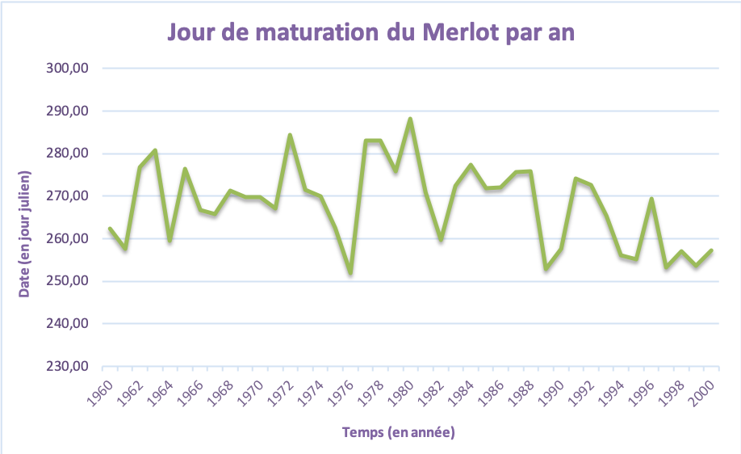
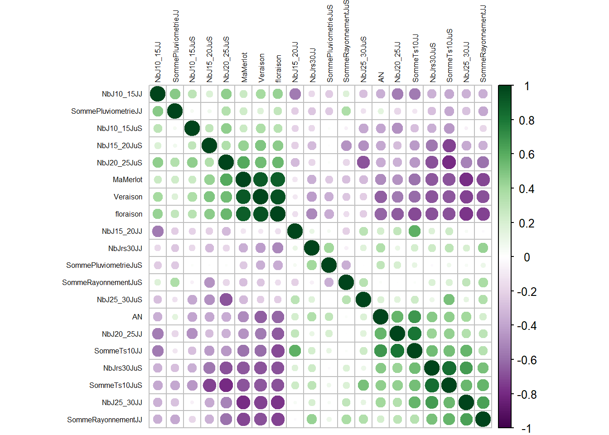
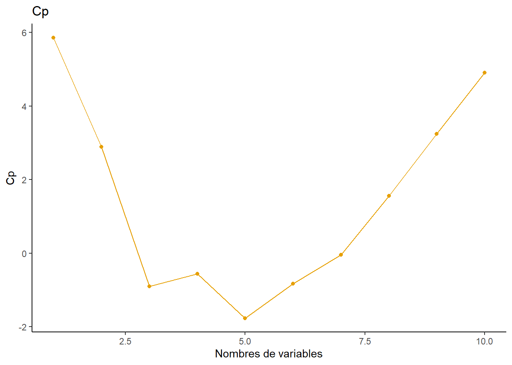
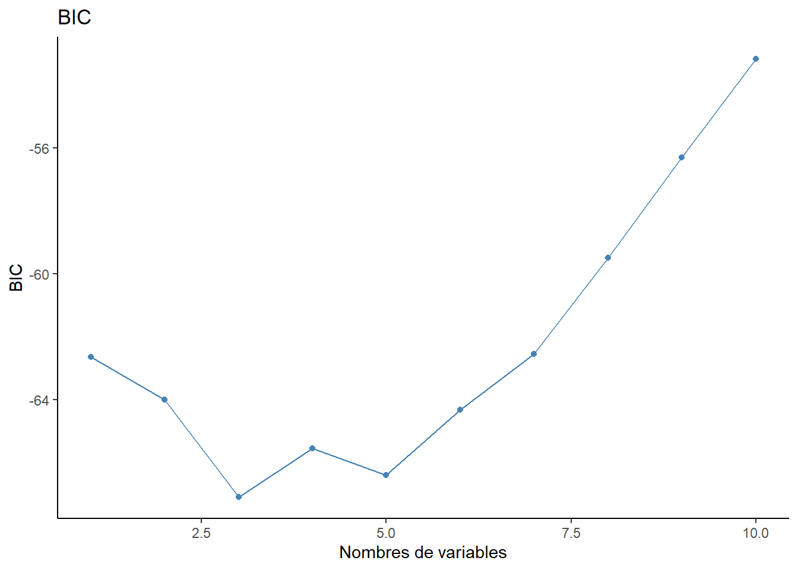
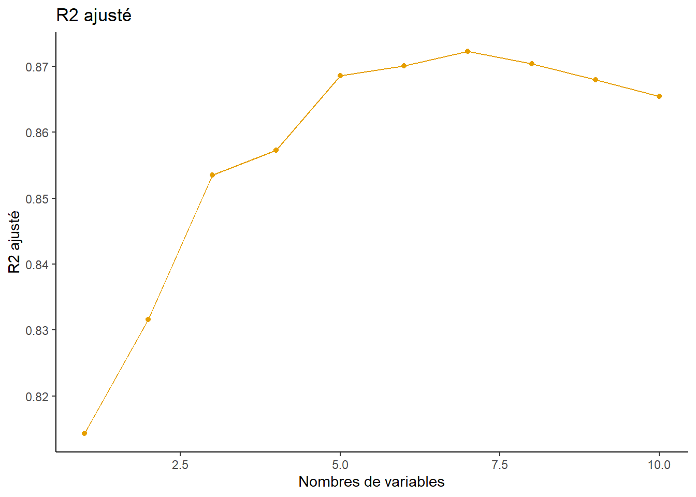
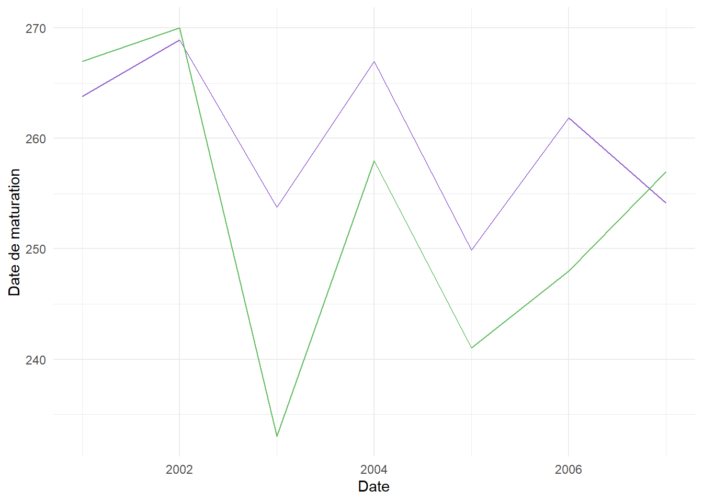

# Chargement des packages nécéssaires
library(tidyverse)
library(readxl)
library(corrplot)
library(kableExtra)
library(leaps)
library(lubridate)Projet 3: Etude de la date de maturation du Merlot
Introduction
À Bordeaux, les viticulteurs ont sur plusieurs années étudiées les conditions de développement et de maturation de leurs différents cépages en fonction des sols de leur terre, afin d’aménager au mieux leurs cultures. Pour exemple, le merlot est un cépage rouge, aux petites baies noires apparues à la fin du XVIIIe siècle. Ce cépage est produit dans la plupart des terroirs bordelais, où il représente plus de 65% de la surface plantée. Le merlot est à maturation lente estimée à deux semaines et demie après le Chasselas (cépage blanc d’origine suisse). Plus la date de maturation est tardive plus le vin est meilleur. D’après les études menées par les viticulteurs en collaboration avec des géologues, les sols les plus adaptés à une maturation lente sont les sols argilo-calcaires frais. Malgré avoir étudier scrupuleusement l’emplacement du merlot sur leur terre, les viticulteurs ont constaté qu’au fil des années la date de maturation pouvait varier considérablement d’une année à l’autre et que celle-ci arrivait de plus en plus tôt dans l’année, ce qui est problématique en matière de logistique et qualité du vin.
La variation de cette date d’une année à l’autre se constate sur le graphique ci-dessous :

Les viticulteurs cherchent à pouvoir estimer la date de maturation des Merlots afin de simplifier leur logistique.
Cette date n’est pas facile à prédir en raison de divers facteurs qui en viennent à la faire fluctuer. Bien connu, le mode de vie de notre société impact considérablement l’environnement. Depuis plusieurs années, les conséquences du réchauffement climatique, de la pollution de l’air et des sols deviennent de plus en plus fréquentes : la sècheresse, les feux de forêts, les inodations, la fonte des glaciers etc.
Nous nous intéressons dans cette étude de cas aux facteurs climatiques, tel que, les phénomènes météorologiques. En effet, le réchauffement climatique entraine à travers les années une augmentation du nombre de jours et de nuits “chauds” (au-dessus de 20°C). Cela aurait comme impact le retardement de la date de récolte des vignes.
Pour ces raisons, les viticulteurs font appel à des spécialistes en analyse de données statistiques, afin de répondre à la problématique suivante :
Quels sont les facteurs climatiques influençant la date de maturation du merlot ?
Pour répondre à cette problématique, nous introduirons cette étude par une explication du cycle de développement du merlot, afin de comprendre au mieux les conditions de son développement. Par la suite, nous expliquerons les variables utilisées, pour faciliter la lecture de ce rapport. L’analyse commencera par l’interprétation de la matrice de corrélation regroupant toutes les variables de ce jeu de donnéés.
theme_set(
theme_classic()
)# Chargement du dataset
vigne <- read_excel("ECSA3_vignobles_bordelais2022.xlsx", sheet=2)
# Suppression de la variable redondante
vigne <- vigne %>% select(-c(MaMerlot...19))
# Renomme la première variable
vigne <- vigne %>% rename(MaMerlot=MaMerlot...2)Le merlot et son environnement
Le merlot se développe selon un cycle précis. À la fin de la maturation, courant septembre, le merlot se met en dormance correspondant à l’hibernation pendant l’hiver, pour ce protégé du froid et du gel de cette période. La sortie de la dormance s’effectue quand les températures avoisinent les 10°C. Petit à petit, la vigne va sortir de son état végétatif, en réactivant la circulation de la sève. Deux jours après le Chasselas le cépage débourre, c’est-à-dire qu’il forme des bourgeons. Durant le mois d’avril, des feuilles vont pousser sur la vigne, afin de commencer la photosynthèse, pour la formation de composés organiques essentiels à la plante, dont le sucre. S’ensuit la floraison, étant à l’origine de la fécondation des vignes, aboutissants aux graines contenues dans les raisins. Puis la nouaison, formation des grains de raisons. Ces graines grossissent et changent de couleur par la suite, c’est le phénomène de véraison. Pour parvenir, deux semaines et demie après le Chasselas à la maturation, se déterminant à partir de la sucrosité des baies (taux de sucre).
Pour avoir une idée exacte des périodes où se produisent la floraison, la véraison et la maturation voici quelques statistiques :
Floraison :
summary(vigne$floraison) Min. 1st Qu. Median Mean 3rd Qu. Max. NA's
143.0 155.0 162.0 161.4 166.0 178.0 20 Veraison :
summary(vigne$Veraison) Min. 1st Qu. Median Mean 3rd Qu. Max. NA's
211.5 221.4 228.7 228.8 234.6 247.3 7 Maturation :
summary(vigne$MaMerlot) Min. 1st Qu. Median Mean 3rd Qu. Max. NA's
252.0 259.5 269.8 268.2 275.7 288.2 7 Variables
Pour bien commencer cette étude de cas il est important d’expliquer les différentes variables qui constituent le jeu de données :
MaMerlot: Date en jours julien de maturité du merlot.NbJrs30JJ/NbJrs30JuS: Nombre de jours où il a fait une température supérieur à 30 degré de janvier à juin (JJ) / de juillet à septembre (JuS)NbJ25_30JJ/NbJ25_30JuS: Nombre de jours où il a fait une température entre 25 et 30 degré de janvier à juin (JJ) / de juillet à septembre (JuS)
Le principe est le même pour les variables : NbJ20_25JJ / NbJ15_20JJ / NbJ10_15JJ / NbJ20_25JuS / NbJ15_20JuS / NbJ10_15JuS
SommeTs10JJ/SommeTs10JuS: Somme des températures supérieur à 10 degré de janvier à juin (JJ) / de juillet à septembre (JuS).SommePluviometrieJJ/SommePluviometrieJuS: Somme de pluviométrie de janvier à juin (JJ) / de juillet à septembre (JuS)SommeRayonnementJJ/SommeRayonnementJuS: Somme de rayonnement solaire de janvier à juin (JJ) / de juillet à septembre (JuS)Veraison: Date en jours julien de veraison du merlot.Floraison: Date en jours julien de floraison du merlot.
1. Corrélation
Dans cette partie nous allons effectuer une analyse de corrélation. L’analyse de corrélation est une méthode statistique bivariée de mesure de force de la relation linéaire entre deux variables. La corrélation peut-être soit positive, négative ou faible voire nulle. Une corrélation positive entre deux variables signifie que les deux variables évoluent dans le même sens. Tandis qu’une corrélation négative entre deux variables signifie que les variables évoluent dans des directions opposées. S’il n’y a pas de corrélation cela signifie que la variable n’a pas d’influence sur l’autre.
Pour ce faire nous avons effectué une matrice de corrélation mettant en évidence leurs relations linéaires :
cor_matrix <- corrplot(cor(vigne, use="complete.obs"), tl.cex=0.5,
number.cex=0.5, order="hclust", tl.col="black",
col=COL2("PRGn"))
Les corrélations positives sont affichées en vert et les corrélations négatives en violet L’intensité de la couleur et la taille des cercles sont proportionnelles aux coefficients de corrélation. À droite du corrélogramme, la légende de couleurs montre les coefficients de corrélation et les couleurs correspondantes.
Interprétation
Portons notre attention sur les variables de maturation des merlots ainsi que sur celles de floraison et de véraison. Ces variables sont corrélées positivement entre elles. Ce qui est évident, car après la floraison s’ensuit la véraison qui entraine la maturation du merlot. Toutes ces phases sont liées à intervalles plus ou moins régulié.
Il est intéressant de mettre en évidence qu’elles sont corrélées négativement avec toutes les variables s’étalant de janvier à juin. Cela s’explique par une phase de dormance raccourcies due à un hiver chaud.
Toujours par rapport aux trois variables : floraison, véraison et maturation. Nous observons que sur la période de juillet à septembre les températures comprises entre 10 et 25 degrés sont corrélées positivement. Il s’agit en effet du temps idéal pour un développement optimal de la vigne. Contrairement, aux températures supérieures à 30°C qui sont corrélées négativement aux trois variables, car elles provoquent la sécheresse dans les vignes.
Le rayonnement et la pluviométrie de juin à septembre, ainsi que de janvier à juin sont corrélés négativement, car s’il y a de la pluie, le soleil ne peut éclairer, et donc la quantité de lumière (mesurée en Lux dans le système international) est plus faible.
Avant de continuer, expliquons plus en détails pourquoi la date de maturation du merlot est corrélée positivement avec le nombre de jours entre 20°C et 25°C sur la période de juin à septembre, et négativement sur la période de janvier à juin.
De janvier à juin, la vigne sort lentement de son état de dormance, afin de commencer à créer des bourgeons pour l’été. Cependant, des températures trop chaudes en automne/hiver vont accélérer cette sortie de dormance (nécessaire à la plante, car la protégeant des dégâts liés aux conditions climatiques extrêmes), et donc rendre la vigne vulnérable aux conditions extérieures comme le gel, entraînant la mort de cette dernière. Pour le début de l’été, la plante est déjà sortie de son état de dormance, et le risque de gel est quasi nul, donc plus il fera chaud (sans être extrême, auquel cas la plante mourra de sécheresse), moins il y aura de nuage, et donc plus il y aura de rayonnement pour que la plante effectue la photosynthèse.
2. Analyse globale de la regression
2.1. Analyse de la regression globale et selection d’un sous-model
Dans le modèle suivant on souhaite tester un ensemble de sous-modèle, sur la base de l’analyse de la corrélation entre différente les différentes variables explicatives et notre variable dépendante MaMerlot.
Tout d’abord nous commençons par une estimation du modèle complet qui nous fournis les résultats suivants :
# Modèle de regression globale
Mfull <- lm(MaMerlot ~ ., data = vigne)
#summary(Mfull)Interprétation : Le modèle complet nous suggère que seule la variable explicative Veraison est significativement différente de zéro et joue un rôle dans l’explication des variations observées de la date de maturation du merlot.
Après cette première estimation du modèle complet, on se propose d’utiliser ici les variables corrélées positivement avec MaMerlot pour essayer d’expliquer les variations des dates de maturation. Le modèle estimé nous donnes ainsi les résultats suivants :
# Modèle 1
M1 <- lm(MaMerlot ~ Veraison + NbJ10_15JJ + NbJ10_15JuS +
NbJ15_20JuS + NbJ20_25JuS, data = vigne)
summary(M1)
Call:
lm(formula = MaMerlot ~ Veraison + NbJ10_15JJ + NbJ10_15JuS +
NbJ15_20JuS + NbJ20_25JuS, data = vigne)
Residuals:
Min 1Q Median 3Q Max
-6.5357 -2.8976 -0.9093 2.9390 9.2821
Coefficients:
Estimate Std. Error t value Pr(>|t|)
(Intercept) 60.66103 19.78481 3.066 0.00416 **
Veraison 0.89030 0.09637 9.238 6.47e-11 ***
NbJ10_15JJ -0.01557 0.06761 -0.230 0.81923
NbJ10_15JuS -1.27347 1.27230 -1.001 0.32374
NbJ15_20JuS 0.09157 0.15145 0.605 0.54931
NbJ20_25JuS 0.10039 0.07883 1.273 0.21126
---
Signif. codes: 0 '***' 0.001 '**' 0.01 '*' 0.05 '.' 0.1 ' ' 1
Residual standard error: 4.242 on 35 degrees of freedom
(7 observations effacées parce que manquantes)
Multiple R-squared: 0.8318, Adjusted R-squared: 0.8078
F-statistic: 34.62 on 5 and 35 DF, p-value: 1.333e-12Interprétation : Ce modèle nous suggère comme le modèle complet que seule la variable explicative Veraison est significativement différente de zéro et joue un rôle dans l’explication des variations observées de la date de maturation du merlot. Quand MaMerlot augmente d’une unité Veraison augmente de 0,89 unité.
Ici nous utilisons les variables corrélées négativement avec la date de maturation du Mamerlot pour essayer d’expliquer les variations observées de cette dernière. Le modèle sous-jacent nous donne les résultats suivants :
# Modèle 2
M2 <- lm(MaMerlot ~ NbJ20_25JJ + NbJrs30JuS + NbJ25_30JJ, data = vigne)
summary(M2)
Call:
lm(formula = MaMerlot ~ NbJ20_25JJ + NbJrs30JuS + NbJ25_30JJ,
data = vigne)
Residuals:
Min 1Q Median 3Q Max
-11.7556 -3.8303 -0.9113 3.3400 11.5019
Coefficients:
Estimate Std. Error t value Pr(>|t|)
(Intercept) 296.3822 3.8893 76.204 < 2e-16 ***
NbJ20_25JJ -0.4474 0.1437 -3.114 0.00356 **
NbJrs30JuS -0.3636 0.1392 -2.612 0.01295 *
NbJ25_30JJ -0.9845 0.2198 -4.479 6.96e-05 ***
---
Signif. codes: 0 '***' 0.001 '**' 0.01 '*' 0.05 '.' 0.1 ' ' 1
Residual standard error: 5.687 on 37 degrees of freedom
(7 observations effacées parce que manquantes)
Multiple R-squared: 0.6804, Adjusted R-squared: 0.6545
F-statistic: 26.26 on 3 and 37 DF, p-value: 2.825e-09Interprétation : Ce modèle est intéressant car il suggère que chaque variable explicative joue un rôle dans l’explication de la variable MaMerlot. Dans l’ordre croissant de significativité nous avons NbJrs30JuS puis NbJ20_25JJ et enfin NbJ25_30JJ. On remarque qu’également dans la colonne Estimate les valeurs pour ces trois variables explicatives sont négatives. Cela signifie, que pour NbJ25_30JJ par exemple, quand MaMerlot augmente d’une unité, la variable explicative diminue de 0,98 (≈1) unité. Après interprétation du modèle on peut dire que plus les températures sont élevées, plus la date de maturation du merlot sera précoce, l’impact est plus important pour la période de janvier à juin.
2.2. Selection d’un modèle parcimonieux
Dans cette section, nous souhaitons obtenir un modèle parcimonieux c’est-à-dire ayant peu de variable. Pour ce faire nous devons nous munir d’un critère à prendre en compte pour comparer l’ensemble des modèles qui seront construits. Parmi les critères existant nous pouvons citer le C_{p} de Mallows, AIC, BIC, R^{2}_{ajusté}.
Les variables floraison et Veraison étant très corrélées et apportant la même information dans le modèle, nous avions décidé d’en supprimer une pour éviter les problèmes de colinéarités entre les cofacteurs durant le calcul des estimations des \hat{\beta}. Pour effectuer notre choix nous nous sommes basé sur la valeur du coefficient de corrélation entre Veraison et Mamerlot, puis entre floraison et Mamerlot en sélectionnant celui avec la valeur de r^2 la plus élevée. De ce fait nous avions retenu la variable Veraison car elle a le coefficient de corrélation le plus élevé avec notre variable dépendante.
De plus nous avions également retiré la variable NbJ10_15JuS de l’analyse car elle n’apporte pas assez d’information pour prédire la variable MaMerlot. En effet on peut remarquer que cette variable prend en grande majorité la valeur 0. Cela se remarque aussi au niveau des statistiques descriptives avec la médiane qui est 0, de plus au regard de la valeur minimale qui est 0 et maximale qui 3, cette variable ne présente pas de grosse variation.
# Suppression de la variable floraison
vigne <- vigne %>% select(-c(floraison, NbJ10_15JuS))Ici nous effectuons une recherche exhaustive de tous les meilleurs modèles de chaque taille afin d’en sélectionner celui qui nous semble le plus pertinent.
# Recherche exhaustives des variables pertinentes pour les critères
# Cp/AIC, BIC, R2_ajusté, RSS
modelfit.full <- regsubsets(MaMerlot ~ ., data=vigne, nvmax = 10)
model.full.summary <- summary(modelfit.full)# Nombres de variables optimal pour chaque critères Cp, BIC, R2_ajusté
min.cp <- which.min(model.full.summary$cp)
min.bic <- which.min(model.full.summary$bic)
max.r2ajuste <- which.max(model.full.summary$adjr2)
print(min.cp)[1] 5print(min.bic)[1] 3print(max.r2ajuste)[1] 7La sortie précédente nous donnes le nombre de variables optimales qui minimise ou maximise le critère de sélection choisi. Pour le critère C_{p} le meilleur modèle minimisant ce critère contient 5 variables, pour le critère BIC c’est 3 variables et pour le R^{2}_{ajus} 7 variables permettent de maximiser ce critère.
# Valeurs du Cp pour chaque modèle de taille considéré
cp.val <- as.data.frame(model.full.summary$cp)
cp.val <- cp.val %>% mutate(index=seq(1, nrow(cp.val)))
cp.val <- cp.val %>% rename(cp=`model.full.summary$cp`)# Représentation graphique
cp.val %>% arrange(cp) %>%
ggplot(mapping = aes(x = index, y = cp)) +
geom_line(color = "#E69F00") +
geom_point(color = "#E69F00") +
labs(title = "Cp",
x = "Nombres de variables",
y = "Cp")
# Valeurs du BIC pour chaque modèle de taille considéré
bic.val <- as.data.frame(model.full.summary$bic)
bic.val <- bic.val %>% mutate(index=seq(1, nrow(bic.val)))
bic.val <- bic.val %>% rename(bic=`model.full.summary$bic`)# Représentation graphique
bic.val %>% arrange(bic) %>%
ggplot(mapping = aes(x = index, y = bic)) +
geom_line(color = "steelblue") +
geom_point(color = "steelblue") +
labs(title = "BIC",
x = "Nombres de variables",
y = "BIC")
# Valeurs du R2 ajusté pour chaque modèle de taille considéré
r2.val <- as.data.frame(model.full.summary$adjr2)
r2.val <- r2.val %>% mutate(index=seq(1, nrow(r2.val)))
r2.val <- r2.val %>% rename(r2=`model.full.summary$adjr2`)r2.val %>% arrange(r2) %>%
ggplot(mapping = aes(x = index, y = r2)) +
geom_line(color = "#E69F00") +
geom_point(color = "#E69F00") +
labs(title = "R2 ajusté",
x = "Nombres de variables",
y = "R2 ajusté")
Les graphiques précédents nous permettent d’observer l’évolution des différents critères de sélection de variables, en fonction du nombre de variables retenues, et nous pouvons constater de ce fait confirmé les résultats précédents observé de façon analytique.
Dans la suite nous affichons les variables sélectionnées par les différents critères de sélection.
# Listes des variables sélectionnées pour le critère Cp
names(which(model.full.summary$which[min.cp, ]==TRUE))[1] "(Intercept)" "AN" "NbJ10_15JJ" "SommeTs10JJ" "NbJ20_25JuS"
[6] "Veraison" # Listes des variables sélectionnées pour le critère BIC
names(which(model.full.summary$which[min.bic, ]==TRUE))[1] "(Intercept)" "AN" "NbJ20_25JuS" "Veraison" # Listes des variables sélectionnées pour le critère R2_ajusté
names(which(model.full.summary$which[max.r2ajuste, ]==TRUE))[1] "(Intercept)" "AN" "NbJ10_15JJ"
[4] "SommeTs10JJ" "SommeTs10JuS" "SommeRayonnementJuS"
[7] "NbJ15_20JuS" "Veraison" Dans la sortie précédente on remarque que les variables (AN, NbJ20_25JuS, Veraison) sélectionnés par la minimisation du critère BIC sont identiques à celles sélectionnées par le critère C_p qui est équivalent au critère AIC. Ces variables se retrouvent également comprises dans les variables sélectionnées à partir du critère R^{2}_{ajusté} qui lui possèdent plus de variables que les deux autres modèles car plus on a de variable plus le R^{2} tend à augmenter. Nous pouvons enfin constater que le modèle obtenu avec le critère BIC contient 1 variable de moins que le modèle obtenu avec le critère C_{p}, cela est du au fait que le critère BIC pénalise un fortement les modèles contenant un nombre élevés de variables.
Ici nous effectuons une sélection de variable basée sur l’approche backward. Dans cette approche au lieu de faire une recherche exhaustive de toutes les modèles possibles, nous partons d’un modèle complet, puis nous retirons au fur et à mesure les variables qui semblent les moins pertinentes au regard du critère C_p, qui rappelons-le est un équivalent au critère AIC.
# Sélection de variables avec l'approche backward
modelfit.bwd <- regsubsets(MaMerlot ~ ., data = vigne,
method = "backward", nvmax = 18)
modelfit.bwd.sum <- summary(modelfit.bwd)# Valeurs du Cp
cp.val.bwd <- as.data.frame(modelfit.bwd.sum$cp)
cp.val.bwd <- cp.val.bwd %>% mutate(index=seq(1, nrow(cp.val.bwd))) %>%
rename(cp=`modelfit.bwd.sum$cp`)# Nombre de variables minimisant le Cp par l'approche backward
min.cp.bwd <- which.min(modelfit.bwd.sum$cp)cp.val.bwd %>% arrange(cp.val.bwd) %>%
ggplot(mapping = aes(x = index, y = cp)) +
geom_line(color = "steelblue") +
geom_point(color = "steelblue") +
labs(title = "Cp",
x = "Nombres de variables",
y = "Cp")
# Variables sélectionnées par l'approche backward
names(which(modelfit.bwd.sum$which[min.cp.bwd, ]==TRUE))[1] "(Intercept)" "AN" "NbJ20_25JuS" "Veraison" En utilisant cette approche backward déjà on remarque le nombre de variables minimisant C_p ici 3, est différentes du nombre de variables obtenues par l’approche exhaustive 5. De plus on remarque que les variables (AN, NbJ20_25JuS, Veraison) sélectionnées par les 2 approches sont identiques à 2 variables près. Pour essayer de trancher et récupérer le modèle qui nous semble le plus pertinent nous effectuons une comparaison de leur R^{2}_{ajusté} que nous pouvons observer dans les résultats suivants :
# Modèle obtenu par approche exhaustive sur critère Cp
summary(lm(MaMerlot~AN+NbJ10_15JJ+SommeTs10JJ+NbJ20_25JuS+Veraison
, data = vigne))
Call:
lm(formula = MaMerlot ~ AN + NbJ10_15JJ + SommeTs10JJ + NbJ20_25JuS +
Veraison, data = vigne)
Residuals:
Min 1Q Median 3Q Max
-5.1323 -2.7954 0.2541 1.8652 8.5458
Coefficients:
Estimate Std. Error t value Pr(>|t|)
(Intercept) -5.086e+02 1.373e+02 -3.704 0.000729 ***
AN 2.908e-01 6.878e-02 4.228 0.000161 ***
NbJ10_15JJ -1.379e-01 6.452e-02 -2.138 0.039583 *
SommeTs10JJ -8.938e-03 4.406e-03 -2.029 0.050162 .
NbJ20_25JuS 2.369e-01 7.289e-02 3.251 0.002547 **
Veraison 9.246e-01 8.729e-02 10.593 1.84e-12 ***
---
Signif. codes: 0 '***' 0.001 '**' 0.01 '*' 0.05 '.' 0.1 ' ' 1
Residual standard error: 3.507 on 35 degrees of freedom
(7 observations effacées parce que manquantes)
Multiple R-squared: 0.885, Adjusted R-squared: 0.8686
F-statistic: 53.88 on 5 and 35 DF, p-value: 1.868e-15# Modèle obtenu par backward
summary(lm(MaMerlot~AN+NbJ20_25JuS+Veraison, data = vigne))
Call:
lm(formula = MaMerlot ~ AN + NbJ20_25JuS + Veraison, data = vigne)
Residuals:
Min 1Q Median 3Q Max
-6.8240 -3.1139 -0.4588 2.5578 7.9118
Coefficients:
Estimate Std. Error t value Pr(>|t|)
(Intercept) -353.81047 128.78621 -2.747 0.00923 **
AN 0.19872 0.06135 3.239 0.00254 **
NbJ20_25JuS 0.19202 0.07430 2.584 0.01384 *
Veraison 0.96434 0.07614 12.664 5.08e-15 ***
---
Signif. codes: 0 '***' 0.001 '**' 0.01 '*' 0.05 '.' 0.1 ' ' 1
Residual standard error: 3.703 on 37 degrees of freedom
(7 observations effacées parce que manquantes)
Multiple R-squared: 0.8645, Adjusted R-squared: 0.8535
F-statistic: 78.67 on 3 and 37 DF, p-value: 4.046e-16Au regard du R^{2}_{ajusté} obtenu par l’approche exhaustive qui est de 0.8686 et celui obtenu par l’approche backward 0.8535 il semble plus pertinent de choisir le modèle obtenu par l’approche exhaustive, mais les variables NbJ10_15JJ et SommeTS10JJ étant peu voir pas trop significatif et si on souhaite obtenir un modèle peu complexe, nous pouvons en faire abstraction et retenir le modèle avec 3 variables ( AN, NbJ20_25JuS, Veraison). Ainsi on a le modèle :
Y = -353.81047 + 0.19872 \times \beta_{1} + 0.19202 \times \beta_{1} + 0.96434 \times \beta_{2} + \epsilon
2.3. Formule de prédiction pour les variables obtenus en juin
Dans cette section nous utiliserons le critère C_p pour effectuer notre sélection de variables.
# Récupère toutes les mesures de Janvier à Juins
vigne.jj <- vigne %>% select(contains("MaMerlot"), ends_with("JJ"))# Modèle complet avec les variables de juin
modelfull.jj <- lm(MaMerlot ~ ., data = vigne.jj)
summary(modelfull.jj)
Call:
lm(formula = MaMerlot ~ ., data = vigne.jj)
Residuals:
Min 1Q Median 3Q Max
-10.0208 -4.8813 0.0454 3.8375 9.8516
Coefficients:
Estimate Std. Error t value Pr(>|t|)
(Intercept) 3.406e+02 2.376e+01 14.335 1.77e-15 ***
NbJrs30JJ -1.080e+00 6.040e-01 -1.789 0.08316 .
NbJ25_30JJ -1.535e+00 5.051e-01 -3.039 0.00471 **
NbJ20_25JJ -8.626e-01 3.528e-01 -2.445 0.02015 *
NbJ15_20JJ -4.332e-01 2.620e-01 -1.654 0.10800
NbJ10_15JJ -2.093e-01 1.441e-01 -1.453 0.15601
SommeTs10JJ 2.056e-02 1.748e-02 1.176 0.24824
SommePluviometrieJJ -8.591e-03 1.057e-02 -0.813 0.42241
SommeRayonnementJJ -1.279e-04 1.029e-04 -1.243 0.22281
---
Signif. codes: 0 '***' 0.001 '**' 0.01 '*' 0.05 '.' 0.1 ' ' 1
Residual standard error: 5.81 on 32 degrees of freedom
(7 observations effacées parce que manquantes)
Multiple R-squared: 0.7115, Adjusted R-squared: 0.6394
F-statistic: 9.865 on 8 and 32 DF, p-value: 8.642e-07# Sélection de variable pour obtenir un meilleur modèle
modelbwd.jj <- regsubsets(MaMerlot ~ ., data = vigne.jj,
method = "backward", nvmax = 9)
modelbwd.jj.sum <- summary(modelbwd.jj)# Nombre de variable minimisant le Cp
which.min(modelbwd.jj.sum$cp)[1] 4# Variables sélectionnés après minimisation du critère Cp
names(which(modelbwd.jj.sum$which[4, ]==TRUE))[1] "(Intercept)" "NbJrs30JJ" "NbJ25_30JJ"
[4] "NbJ20_25JJ" "SommeRayonnementJJ"Après avoir effectué notre procédure de sélection de variable par la méthode backward on remarque que seuls 4 variables sont retenues il s’agit des variables NbJrs30JJ, NbJ25_30JJ, NbJ20_25JJ, SommeRayonnementJJ. La variable n’étant pas significatif dans le modèle nous avions décidé de la retiré de notre modèle final.
# Estimation du modèle finale après sélection
# NbJrs30JJ + SommeRayonnementJJ
modelfinal.jj <- lm(MaMerlot ~ NbJ25_30JJ + NbJ20_25JJ + SommeRayonnementJJ,
data = vigne.jj)
summary(modelfinal.jj)
Call:
lm(formula = MaMerlot ~ NbJ25_30JJ + NbJ20_25JJ + SommeRayonnementJJ,
data = vigne.jj)
Residuals:
Min 1Q Median 3Q Max
-11.8428 -4.5505 -0.0648 4.4406 10.3050
Coefficients:
Estimate Std. Error t value Pr(>|t|)
(Intercept) 3.271e+02 1.507e+01 21.700 < 2e-16 ***
NbJ25_30JJ -1.042e+00 2.243e-01 -4.644 4.21e-05 ***
NbJ20_25JJ -4.666e-01 1.482e-01 -3.149 0.00324 **
SommeRayonnementJJ -1.795e-04 8.504e-05 -2.111 0.04163 *
---
Signif. codes: 0 '***' 0.001 '**' 0.01 '*' 0.05 '.' 0.1 ' ' 1
Residual standard error: 5.847 on 37 degrees of freedom
(7 observations effacées parce que manquantes)
Multiple R-squared: 0.6622, Adjusted R-squared: 0.6348
F-statistic: 24.18 on 3 and 37 DF, p-value: 7.788e-092.4. Prédiction pour les valeurs de 2001 à 2007
# Filtrage et selection des variable pour la prédiction
vigne.pred <- vigne %>%
select(c(AN, MaMerlot, NbJrs30JJ, NbJ25_30JJ, NbJ20_25JJ,SommeRayonnementJJ))%>%
mutate(across(c(NbJrs30JJ, NbJ25_30JJ, NbJ20_25JJ,SommeRayonnementJJ),
~replace_na(., mean(., na.rm=TRUE)))) %>%
filter(AN > 2000) %>% select(-c(MaMerlot))# Affichage des valeurs à prédire
head(vigne.pred)# A tibble: 6 × 5
AN NbJrs30JJ NbJ25_30JJ NbJ20_25JJ SommeRayonnementJJ
<dbl> <dbl> <dbl> <dbl> <dbl>
1 2001 4 11 29 213523
2 2002 2 12 16 212923
3 2003 10 16 33 229947
4 2004 1.94 11.3 25.7 202958
5 2005 6 21 32 225297
6 2006 8 14 21 227747# Prévision des valeurs futurs
pred <- predict(modelfinal.jj, vigne.pred)pred_date <- as.Date(gsub(" ", "", paste(as.character(vigne.pred$AN),
"/01/01")))+pred
names(pred_date) <- c("2001", "2002", "2003", "2004", "2005", "2006", "2007")pred_date <- as.data.frame(pred_date) %>% rename(date_predite=pred_date)
pred_date$date_reel <- as.Date((c("2001-09-24", "2002-09-27", "2003-08-21",
"2004-09-14", "2005-08-29", "2006-09-05",
"2007-09-14")))
pred_date$erreur_absolue <- c(3, 1, 21, 9, 9, 14, 2)kbl(pred_date, caption = "Prédiction du modèle") %>%
kable_styling(bootstrap_options = "striped",
full_width = F)| date_predite | date_reel | erreur_absolue | |
|---|---|---|---|
| 2001 | 2001-09-21 | 2001-09-24 | 3 |
| 2002 | 2002-09-26 | 2002-09-27 | 1 |
| 2003 | 2003-09-11 | 2003-08-21 | 21 |
| 2004 | 2004-09-23 | 2004-09-14 | 9 |
| 2005 | 2005-09-07 | 2005-08-29 | 9 |
| 2006 | 2006-09-19 | 2006-09-05 | 14 |
| 2007 | 2007-09-12 | 2007-09-14 | 2 |
# Comparaison des valeurs observés et celles prédite
plotting_data <- data.frame(annee = vigne.pred$AN,
predite = pred,
reel = yday(pred_date$date_reel))plotting_data %>% ggplot(mapping = aes(x=annee))+
geom_line(aes(y= pred),
color = "#9460D0")+
geom_line(aes(y= reel),
color = "#65BE64")+
labs(x = "Date",
y = "Date de maturation")+
theme_minimal()
Conclusion
Au travers des différents modèles que nous avons proposés, trois variables explicatives semblent faire varier de manière significative la date de maturation du merlot : Nbr25_30JJ Nbr20-25JJ et SommeRayonnementJJ. Toutes les estimations de ces coefficients étant négatives, de telle manière à ce que plus ces variables sont élevées plus la date de maturation sera tôt.
On en déduit que la date de maturation du merlot se joue surtout sur la période de janvier à juin. Plus on a des températures élevées durant cette période, avec un fort rayonnement, plus la maturation aura lieu tôt.
Pour ce qui est des valeurs de prédiction, notre modèle en a trouvé aucune exactement. Cependant, elles appartiennent aux intervalles de prédiction liées aux dates que nous avons prédites. Seulement l’année 2003, où il y a eu une longue période de canicule qui a accéléré la maturation du merlot.
Notre modèle de prédiction ne pourra pas perdurer dans le temps. Car notre jeu de données reste limité en matière d’information, pour pallier aux différents facteurs évoluant et faisant varier la date de maturation. Il ne prend pas en compte les changements climatiques (exemple de 2003 avec la canicule), ni les différents types de pollution pouvant impacter le merlot (pollution des sols).